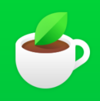
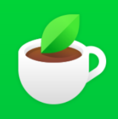

.png)
두근두근 방과후 소식지
2025년 6월호 | 우리 아이들의 특별한 이야기
이사장 인사말
6월의 인사말을 여기에 작성하세요. 아이들의 성장을 지켜봐 주시는 모든 분들께 감사드립니다.
지난 달 이야기
5월 활동을 회고하는 내용을 여기에 작성하세요.

학년별 주요 활동
- 1학년: 새로운 활동
- 2학년: 새로운 활동
- ... 추가 예정
아이들 활동사진


조합원 칼럼
📘 인생의 항아리에 무엇부터 채울 것인가
어느 대학 강의실에서 있었던 일이다. 교수는 학생들에게 전할 메시지를 보여주고자 실험 하나를 준비했다. 탁자 위에는 빈 유리병과 속이 보이지 않는 작은 상자 세 개가 놓여 있었다. 학생들이 강의실에 모이자 교수는 실험을 시작했다. 첫 번째 상자를 연 교수는 골프공을 몇 개 꺼내더니 곧바로 유리병에 넣었다. 그리고 학생들에게 물었다. "이제 유리병이 가득 찼나요?" 학생들은 그렇다고 대답했다.
교수는 두 번째 상자를 열더니 알록달록한 초코볼을 몇 개 꺼낸 뒤 다시 유리병에 넣었다. 그러고서 유리병을 이리저리 흔들자 골프공 사이로 초코볼이 이리저리 굴러가는 모습이 보였다. 교수가 다시 물었다. "유리병이 꽉 차 있나요?" 학생들은 이번에도 그렇다고 말했다.
이제 세 번째 상자가 남았다. 교수는 상자를 열어 그 안에 담겨 있던 모래를 골프공과 초코볼이 든 잼 유리병에 넣었다. 그러자 예상했던 일이 벌어졌다. 모래는 병 속으로 들어가자마자 다른 물체 사이의 빈틈을 빠짐없이 채웠다. 교수는 다시 학생들에게 유리병이 가득 찬 상태인지 물었고, 이번에도 그렇다는 답이 돌아왔다.
그 순간 교수는 가방에서 캔 맥주 두 개를 꺼내더니 유리병에 맥주를 쏟아부었다. 그러자 모래 틈에 있던 마지막 빈자리가 모두 채워졌다. 강의실에서 한바탕 웃음소리가 터져 나왔다. 교수는 학생들에게 말했다. "이 유리병에 여러분의 인생이라고 상상해보세요." 학생들이 놀라는 동안 교수는 말을 이어갔다. "골프공은 가족, 부모, 친구, 자녀 등 인생에서 중요한 것들을 상징합니다. 알록달록한 초코볼은 직장, 집, 자동차를, 모래는 우리 삶에서 만나는 온갖 소소한 것을 상징하지요. 중요한 것은 무엇을 가장 먼저 유리병에 넣는가입니다. 모래를 먼저 넣어버리면 초코볼이나 골프공이 들어갈 자리가 없을 겁니다. 이제 여러분에게는 이 원리를 자기 삶에 비추어 올바른 결론을 내려야 하는 중요한 과제가 주어졌습니다."
그러자 학생 한 명이 손을 들어 질문했다. "그런데 맥주가 뜻하는 건 뭔가요?" 교수는 살짝 미소짓더니 이렇게 답했다. "맥주는 꽉 차 보이는 삶일지라도 뭔가를 즐길 만한 여유가 없다는 것은 아니라는 사실을 보여주는 거였어요."
📎 이야기 잘 읽으셨나요?
이 이야기는 인생에서 정말 중요한 것이 무엇인지 늘 먼저 생각하고 그것부터 채워야 한다는 것을 이야기해줍니다. 삶이 아무리 바쁘고 가득 차 보여도, 여유와 즐거움을 위한 작은 공간은 늘 남겨둘 수 있다는 것을 꼭 잊지마시길 바랍니다.
다음 달 미리보기
- 📚 여름방학 프로그램 예고
- 🚌 야외 체험학습
두근두근 방과후 소식지 | 조합가입문의: 02-504-7643
 네이버 블로그
|
 네이버 카페
|
네이버 블로그
|
 네이버 카페
|
 인스타그램
인스타그램